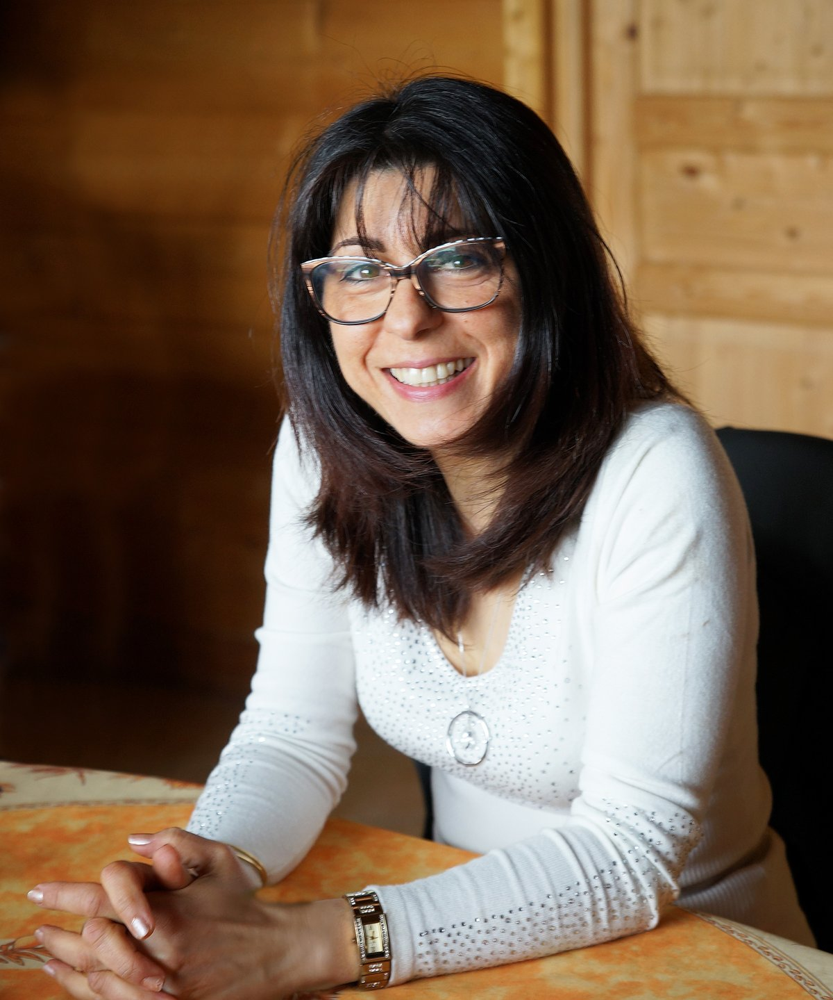

Un être atypique en contact avec ses versions du futur
Une galactique venue du futur qui a réintégré ses fractales Terrestres et œuvre avec ses fractales Célestes à travers les différentes Time Lines.

Une petite fille choquée par un monde inversé. Une adolescente passionnée par les sciences humaines qui étudie la psychologie humaine, les religions et les courants philosophiques.
Un cerveau gauche musclé — expert comptable en libéral de 1993 à 2013. Un cerveau droit déployé — médium clairvoyante et clairaudiente en contact avec de nombreux mondes parallèles.
Une grossesse vécue en conscience avec l'Âme de ma fille en 1999.
Des premières clairvoyances au changement de vie
Aussi longtemps que remonte ma mémoire, je suis animée par une quête du sens profond de la vie. Adolescente, je lis des centaines d'ouvrages sur les sciences et la psychologie humaine, la spiritualité, les religions et les idéologies contemporaines. À 16 ans, je décide de devenir chef d'entreprise ; à 28 ans, j'ouvre mon cabinet d'expertise comptable et embauche du personnel.
Ma vie bascule en 1993 lorsqu'une clairvoyance se révèle subitement. Des Êtres décédés m'apparaissent ; ma grand-mère me sauve d'un accident de circulation imminent. En 1998, je vis ma grossesse en contact quasi permanent avec l'Âme de ma fille. En 2000, mes aptitudes à communiquer avec des mondes parallèles s'intensifient brusquement et mes nuits sont animées de voyages astraux et de rencontres multidimensionnelles. En 2002, une clairaudience s'active dans la Grotte de Patmos. La vidéo et la stéréo !
En parallèle de ma vie d'expert-comptable, de présidente d'une association de gestion d'une école catholique et de maman, j'expérimente méditations et stages de développement personnel durant plus de 20 ans. Des guides invisibles et des Êtres d'autres dimensions m'initient à me servir de ces dons plutôt que de les subir, et à créer mes propres outils méditatifs.
En 2013, j'abandonne ma vie d'Expert-comptable, pragmatique et ancrée dans les affaires, pour passer à une vie de Service tournée vers l'humain.
Être acteur d'un nouveau monde en ouvrant les consciences. Telle est ma réelle motivation.
Je ne me considère pas comme une enseignante mais plutôt comme une personne autodidacte et pragmatique qui partage son expérience de changement de vie. Je ne fais partie d'aucun mouvement associatif ou sectaire. Liberté, Sincérité et Respect sont mes valeurs de base.
Parcours
Coach et créatrice d'enseignements
Création et animation de stages de développement personnel depuis plus de 20 ans. Formation de plus de 950 personnes depuis 2013.
Canalisation de Maîtres
Canalisation de Maîtres divers — OMA pendant 15 ans, Maîtres Ascensionnés dont Saint Germain sur le Mont Shasta. Certains Maîtres m'ont visitée dans leur propre Merkaba.
Conférencière depuis 2013
Paris, Nîmes, Rennes, Biarritz (Forum International sur le féminin), Périgueux, Plazac, Toulouse, Rennes-les-Bains (organisation du Forum en 2025), Limoges… Interventions dans diverses associations en France ou via Zoom. Sujets : la vie après la mort, la conscience expansée…
Enseignement initiatique — Corps de Lumière cristallin et Vortex de l'Âme
Véritable Corps de l'Âme / SOI — « Pass Galactique ». Synthèse autodidacte de mon expérience à partir de stages avec un scientifique éveillé de la NASA, avec des Russes particulièrement avant-gardistes, et surtout des instructions reçues d'Êtres de 5ᵉ dimension concernant la géométrie dans la galaxie et d'un document secret reçu au MONT SHASTA en 2018.
TELOS et Mont Shasta
Depuis 2003 — Nombreux contacts et voyages astraux avec le peuple intraterrestre de TELOS sous le Mont Shasta en Californie. Rencontre avec Aurelia Louise Jones en 2004.
2014–2019 — Organisatrice de voyages initiatiques au Mont Shasta et de rencontres internationales avec le Réseau TELOS Mondial et Dianne Robbins.
Aujourd'hui
- 2024 — Création de stages « Multidimensionnalité de l'être » avec synthèse de la phase Terrestre (Fractales Terrestres dites Vies passées) en préparation de la phase Céleste (Fractale Céleste dite Futur).
- 2025 / 2026 — Mont Shasta. Visite dans le nouveau TELOS après l'invasion de 2021, confirmée suite à ma rencontre avec Elena Danaan en août 2024 et 2025.
- 2026 — Mont Bugarach. Contacts avec des ET Gardiens. Mission en cours.
Spécialités
Spécialiste du voyage astral et des contacts avec divers peuples intra et extraterrestres depuis 2003.
Vidéos
Sélection de conférences et interventions.
L'intégration des vidéos YouTube existantes sera ajoutée une fois la chaîne YouTube récupérée.
Une clientèle variée
Thérapeutes en soins corporels et énergétiques, médecins généralistes, infirmières, psychologues, pédopsychiatres, secrétaires médicales, coiffeuses et esthéticiennes, géobiologues et radiesthésistes, chef d'orchestre, peintres — mais aussi comptables, notaires, huissiers, inspecteurs et contrôleurs des Impôts, agents d'assurance, agents immobiliers, ingénieurs, intervenants en permaculture, architectes…
Divers livres en cours d'écriture.
Lire l'article dans Sud Ouest du 2 juin 2017 — « Cette comptable qui est devenue coach de vie… »